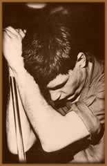

Cidade
industrial de Manchester, 1977. Em meio ao movimento Punk da época,
as bandas Sex Pistols e The Clash levam milhares de fãs
aos seus shows. Durante uma das apresentações da
Anarchy Tour, dos Sex Pistols, havia três amigos que se
conheciam desde a infância: Bernard Sumner, Peter Hook e
Terry Mason. Uma outra figura bem comum em todos os shows de Rock
da época estava lá também. Seu nome era Ian
Curtis.
Dias após, os três amigos resolvem
formar uma banda e colocam um anúncio procurando por um
vocalista; Ian Curtis responde. Assim, começa a trajetória
da banda conhecida primeiramente como Warsaw, nome dado
pelo próprio Ian em alusão a uma música de
David Bowie (uma música longa, com vocais estranhos no
final, parecendo um culto religioso sinistro e primitivo).
Numa época em que qualquer um poderia fazer
música, pois não era necessária nenhuma técnica,
apenas vontade e idéias inovadoras, Ian Curtis começa
a se destacar com sua banda, agora chamada de Joy
Division; nome extraído do livro The House Of Dolls,
que descrevia os horrores do nazismo. As "Divisões
do Prazer" eram os alojamentos destinados às mulheres
judias que eram estupradas nos campos de concentração
nazistas. Quem escolheu o nome também foi Ian Curtis, que
era obcecado por tudo que fosse alemão.
No LP de estréia intitulado Unknown
Pleasures, gravado em apenas quatro dias e meio, o Joy Division
começa a atrair atenção do público
na Inglaterra. As letras de Ian Curtis se destacam, em sua expressão
máxima do desespero e angústia humana. Quando o
álbum foi lançado em junho de 1979, foi saudado
pela crítica inglesa como um dos melhores discos de estréia
de todos os tempos.
Os
shows do Joy Division começaram a se tornar lendários.
A banda ficava imersa em sombras, destacando-se a dança
maníaca de Ian Curtis, que era epiléptico e repetia
inconscientemente os movimentos que fazia durante seus ataques.
O Joy Division já possuía um grupo fiel de admiradores,
que seguia–os onde quer que fossem e se vestia à
maneira austera da Alemanha dos anos 40.
Em março de 1980, entram em estúdio
para gravar o segundo álbum, chamado Closer (Mais
Perto; cabe aqui a pergunta: mais perto do quê?). Pelo
nome e pela capa, deduz-se o que estava por vir. A banda sempre
esteve envolta em uma aura de mistério. Tudo em Closer
é enigmático: a capa, as letras, e sobretudo o som.
O disco foi gravado sob uma abóbada de estuque especialmente
construída com a finalidade de conseguir a ressonância
de uma capela. O som é vazio e distante com sintetizadores
estranhamente colocados, mais o vocal de Curtis soando de maneira
cavernosa.
No mês seguinte alguns concertos foram cancelados
devido a problemas de saúde do vocalista. O grande número
de shows marcados ajudou a piorar a epilepsia de Ian Curtis, que
era cada vez mais freqüente. No final de um show no Rainbow,
em Londres, Ian teve um ataque epiléptico e acabou caindo
violentamente em cima da bateria, para delírio da platéia
que não sabia o que estava ocorrendo, achando que fazia
parte da apresentação. "As pessoas admiravam
Ian pelas coisas que estavam matando-o", descreveu a
esposa Deborah Curtis em sua biografia. Uma turnê americana
de três semanas estava prevista para iniciar em maio, mas
o grupo nem chegou a embarcar.
No dia 18 de maio de 1980, aos 23 anos, Ian Curtis
é encontrado morto em sua casa, enforcado por uma corda
utilizada como varal. O motivo provável para seu suicídio
foi sua epilepsia cada vez mais constante. Curtis falava obsessivamente
da morte a ponto de antecipar seu próprio suicídio
em letras como In a Lonely Place (Um lugar de paz),
talvez ele realmente precisava desse lugar. Terminava assim a
carreira de um dos mais influentes grupos de todos os tempos,
justamente quando estava preste a atingir seu auge.
O compacto Love Will Tear Us Apart foi
lançado em maio e colocou o Joy Division pela primeira
vez no Top 20 britânico. O álbum Closer,
lançado no mês seguinte, chegou a atingir o número
6 na parada
britânica. Ironicamente, o Joy Division atingiu sua maior
popularidade quando já havia acabado e Curtis nunca chegou
a ver o sucesso que desejava para o grupo. O álbum Still
lançado em 1981, continha sobras de estúdio e o
último concerto do grupo, aumentando ainda mais o culto
que foi criado em cima do Joy Division. Os remanescentes da banda,
numa necessidade de esquecer a tragédia, deram início
a uma Nova Ordem (a banda New Order).
Desespero, melancolia, angústia, dor, mistério...
Combinados e apresentados de maneira poética e emocionante.
Assim, Ian Curtis tornou-se um mito, e um dos mais obscuros músicos
de sua época.
Por Spectrum